adaptTo() 2026, Berlin, September 28 to 30, 2026. Slot times are Berlin time. Each talk links its page and slides on adapt.to.
Why I went through all 25 talks
adaptTo() is Europe's developer conference for Adobe Experience Manager (AEM), organized by diva-e Conclusion. I was just there for the 2026 edition, its 15th anniversary. It was one of the best conferences I've ever attended. Engineers and researchers from Adobe were there, along with engineers and researchers from all over the world. Katie Phillips from Best Buy and I gave a talk there too.
So I gave each of the 25 full talks about 30 seconds on camera. I left out the lightning talks. For each talk I cover three things:
- What the talk is
- Why you should watch it
- My take
It's meant to help you pick which recordings to watch once they're up. Each take is my own limited understanding from the room. Some of it may be wrong, and a few takes are a little spicy.
Below, every talk has its slot, its speakers, links to its page, slides and moment in the video, and the slide I had on screen while I gave my take.
Day 1: Monday, September 28
01Agents don't browse - AEM in the Age of AI

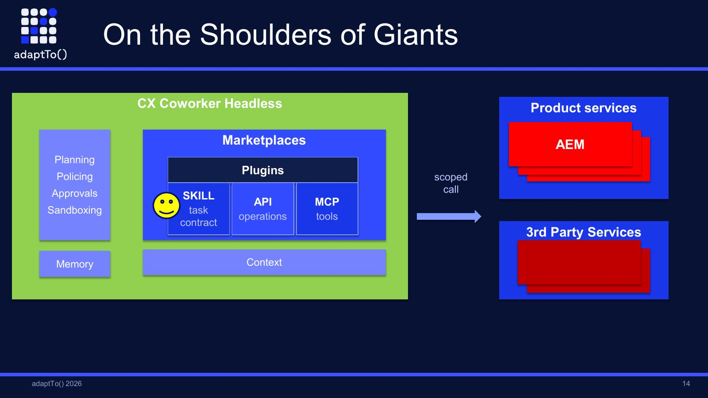
- What it is
- The history behind CX Coworker: what the team didn't like along the way, and how it went from a multi-agent system to more of a mono-agent system.
- Why watch
- It's one of the better talks on CX Coworker. Highly recommend it.
- My take
- Moving to a mono-agent is really cool. But parallelism, and capabilities like security per agent, may have changed a little along with it.
02One AEM MCP Server to Rule Them All

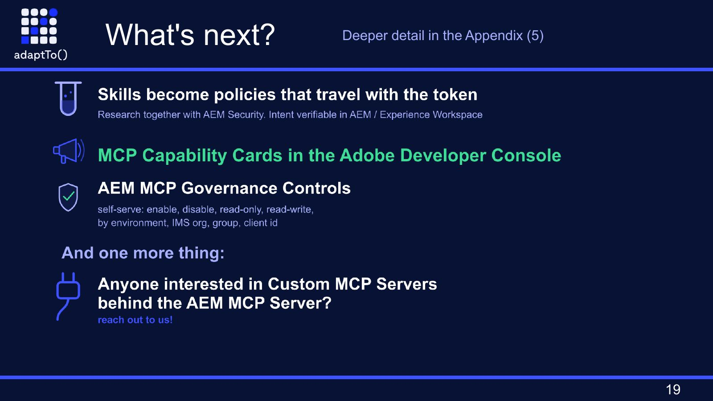
- What it is
- The story behind the AEM MCP server: the history, the thought process, and how the team solved the challenges of building on MCP servers. MCP, the Model Context Protocol, is the standard way AI assistants call tools in other systems.
- Why watch
- If you're interested in using the AEM MCP server. The demo is good, too.
- My take
- It makes sense. MCP is a lot more mature than it was just six months ago, and it was very cool to hear the engineers talk about it.
03Rolling Out MCP on AEM: Lessons from Early Production

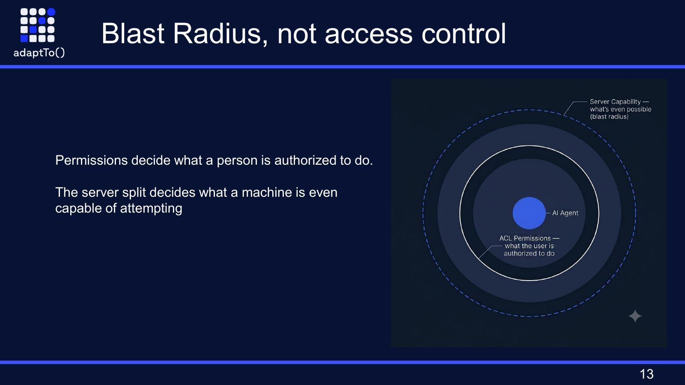
- What it is
- Real production lessons from rolling out MCP on AEM, from two of my fellow AEM Champions.
- Why watch
- If you're going to use AEM MCP servers in production. The memes were on point, too. I learned quite a bit.
- My take
- One capability we could add is some kind of judgment step, with its own tools, that pre-filters before anything reaches the MCP server.
04Advancing AEM Elasticity: Earlier Signals, Faster Readiness, Better Resilience

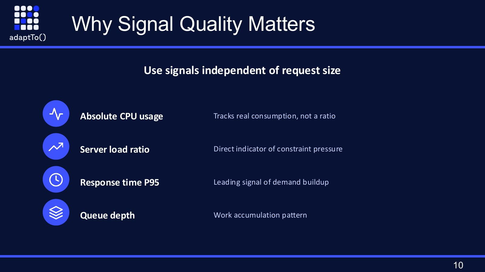
- What it is
- How the people who run infrastructure for many, many customers keep it stable. Most of us haven't thought about that side. From the talk's slides: the same 600m of real CPU load scales out with a 500m CPU request and stops scaling with a 1000m one, so the talk moves to signals that don't depend on the request size, like absolute CPU usage and queue depth.
- Why watch
- They go through the science behind site reliability.
- My take
- I've personally never seen site reliability explained this way. Highly recommend it.
05Securing AEM Customer Code: Automated fixes for vulnerabilities in dependencies

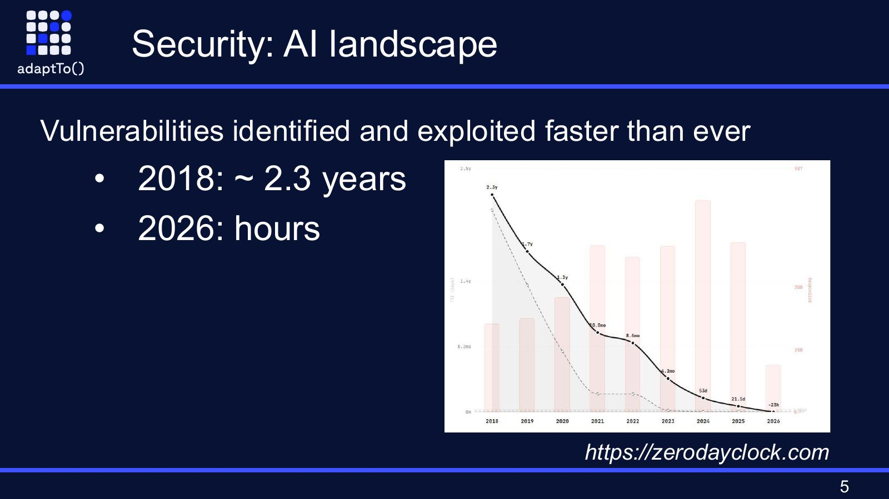
- What it is
- A similar problem to the last talk. AEM as a Cloud Service and Adobe Managed Services have a lot of different customers, with different code quality and different requirements, and this team has to look after all of it. The talk is about fixing vulnerabilities in customers' dependencies automatically. From the talk's slides: vulnerabilities are identified and exploited faster than ever: about 2.3 years in 2018, hours in 2026.
- Why watch
- They have a very, very tough job, and it's very interesting to see the techniques they use to solve it.
- My take
- This was one of the talks without a ton of AI on top of AI, which is great. It's good to see some non-AI talks.
06AEM Content Requests - Reduce, Reduce, Reduce!

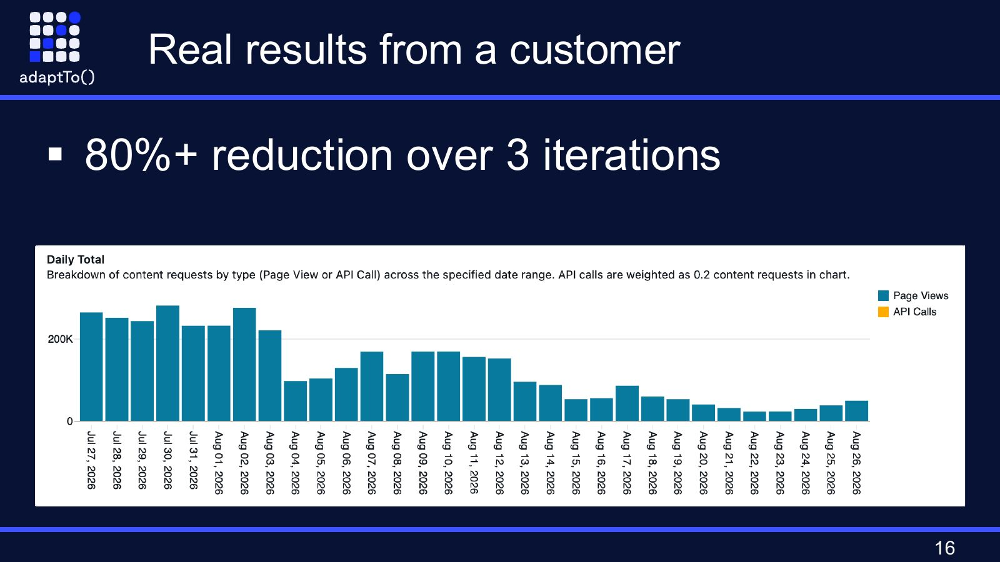
- What it is
- How Adobe licenses AEM as a Cloud Service and Edge Delivery Services (EDS), why content requests matter, and tips and tricks to reduce them. From the talk's slides: one customer cut content requests by more than 80% over three iterations.
- Why watch
- To cut your AEM licensing cost.
- My take
- It's extremely helpful for that. Still, licensing models could maybe be done slightly differently.
07Develop Faster with AEM AI Tooling

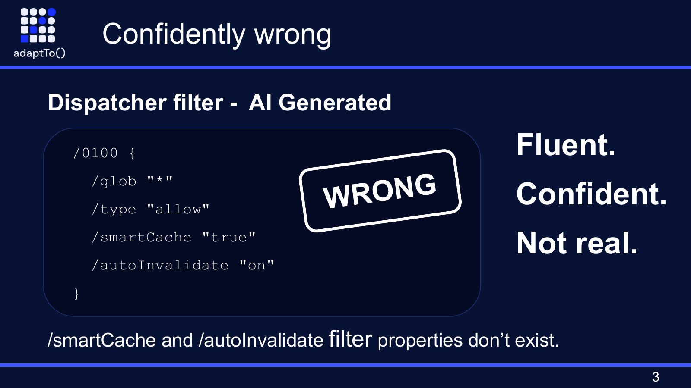
- What it is
- AI tooling for AEM development. From the talk's slides: left on its own, AI writes a fluent, confident Dispatcher filter with /smartCache and /autoInvalidate properties that don't exist. The tooling lets it see your running instance instead of guessing.
- Why watch
- It covers all parts of AEM development, including the Dispatcher.
- My take
- The Dispatcher has always needed a lot of expertise. If you've worked on it, you know. On a first project, it's fairly difficult. Very cool talk.
08Migrate to AEM Cloud Service Faster - An Agentic Workflow with MCP and Adobe Migration Skills

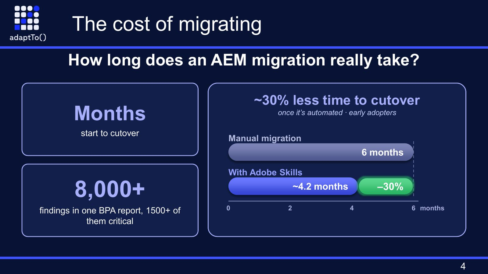
- What it is
- How to use AEM tools, skills and MCP servers to get a lot of a Cloud Service migration done. Skills are packaged instructions an AI agent loads for one kind of job.
- Why watch
- If you're going to go through an AEM as a Cloud Service migration.
- My take
- They cover both skills and MCP servers, and how to get the work done with them. Very good talk.
09Comparador - Spot the Difference: Surviving AEM Migrations & Deployments Without Going Blind

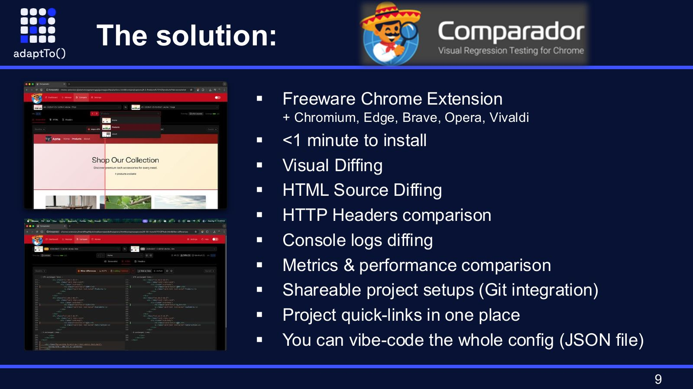
- What it is
- A creative way to detect what changed between your current website and the new one you're building, with a Chrome extension. From the talk's slides: it compares the visuals, the HTML source, the HTTP headers and the console logs, and it installs in under a minute.
- Why watch
- It was one of the more fun ones, and they got the audience engaged. If you've ever needed to spot the difference between two versions of a site, this is a very creative solution.
- My take
- It's open source, and I always like open source stuff. A good talk. The two of them did a great job.
Day 2: Tuesday, September 29
10AI Agent-Driven Content Migration for Edge Delivery Services

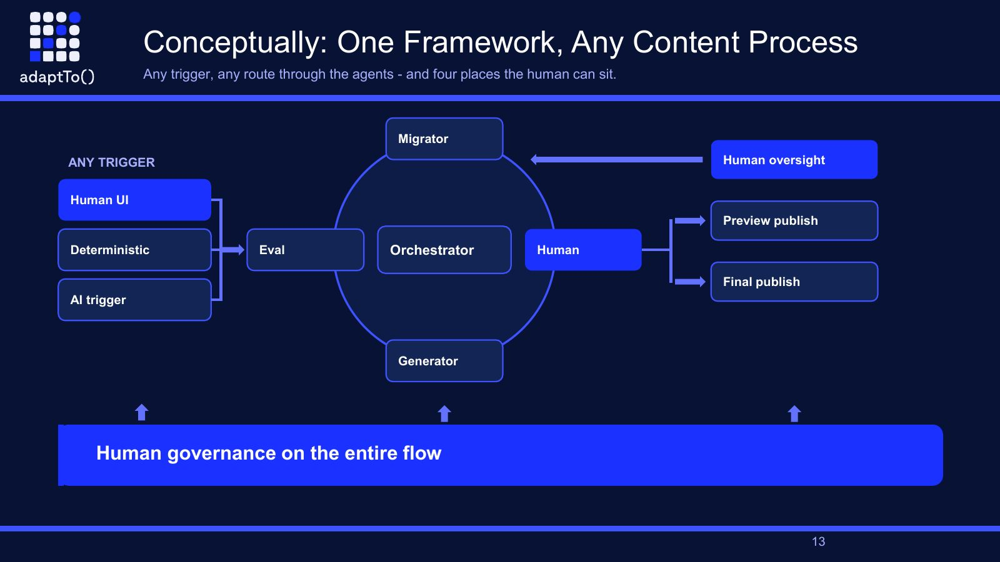
- What it is
- Our talk, Katie Phillips from Best Buy and me, the first talk of the second day: AI agents that migrate content to Edge Delivery Services. From our slides: one framework for any content process, with any trigger, any route through the agents, and four places a human can step in.
- Why watch
- I'd recommend it once the recordings are out.
- My take
- Three things I'd call out:
- Like most talks at the conference, ours is very agentic. It's also AI using AI, where most of the other talks were about humans using AI.
- We think about evals.
- It's a multi-step process, and the AI agents share a common working process.
11Hybrid AEM Architecture: Bridging Server-Side Rendering with Headless React at the Component Level

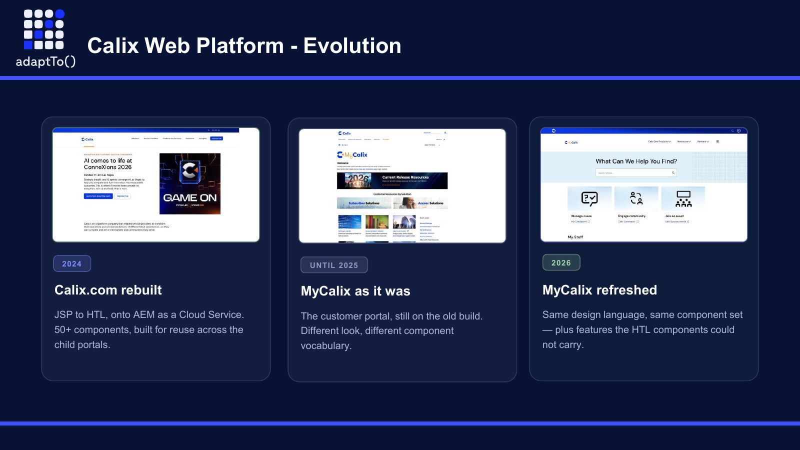
- What it is
- Server-side rendering and headless React combined at the component level in AEM, and how the team solved a lot of the challenges along the way. From the talk's slides: Calix.com moved onto AEM as a Cloud Service in 2024. In 2026 the MyCalix customer portal got the same components, plus features the HTL components couldn't carry.
- Why watch
- Watch it if you run a React or Angular website inside AEM as a Cloud Service.
- My take
- I've seen this done many ways, and this is one of the fairly clean ones. It's a very solid pattern.
12Tales from the AEM Migration Trenches

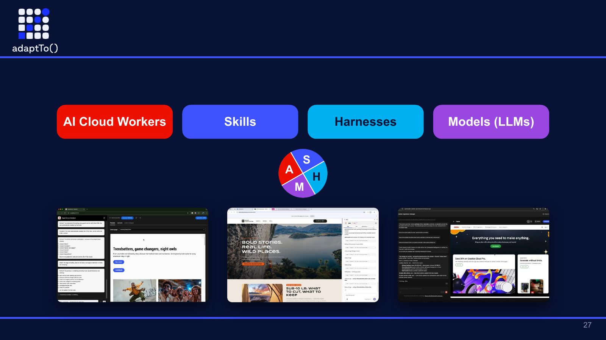
- What it is
- The story of how AEM migrations used to be, starting about two years ago, and how the work moved to a very AI-native way, with AI in the cloud doing a lot of it. From the talk's slides: the story starts with their first LLM on July 18, 2024 and gets to a one-click Chrome extension backed by an agent on Cloudflare Workers.
- Why watch
- The storytelling, with animations, from beginning to end.
- My take
- I enjoyed this one quite a bit. Very cool storytelling.
13Spiritually-Succeeding AEM: Advanced Author Customization in DA

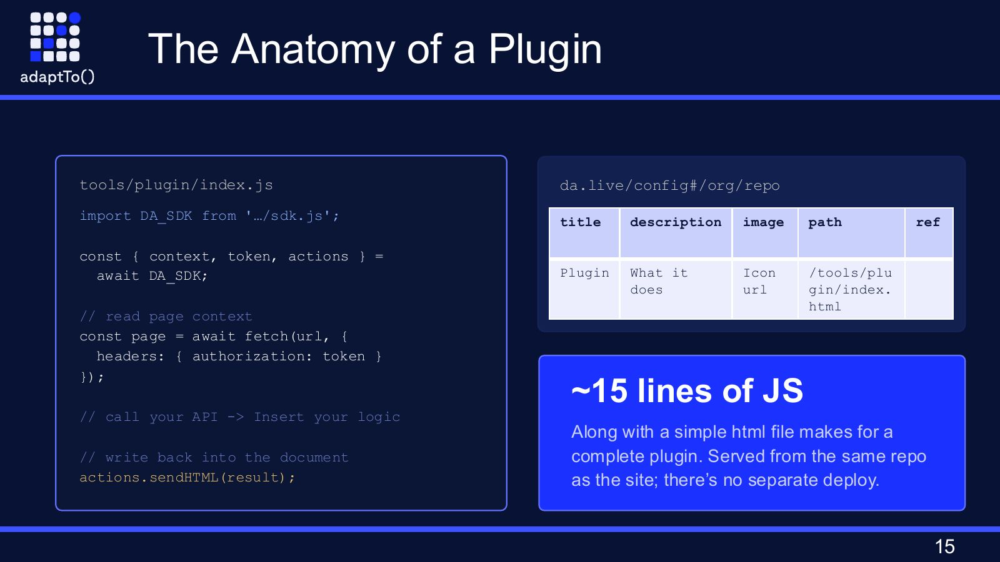
- What it is
- The power of plugins in DA, Document Authoring (da.live), told alongside the history of AEM's evolution. The title slide ends with "in Experience Workspace", which is how I introduced it in the video. From the talk's slides: about 15 lines of JavaScript and a simple HTML file make a complete plugin, served from the same repo as the site, with no separate deploy.
- Why watch
- It's very grounded in what a plugin can actually do, and the team did a really great job showing it.
- My take
- I liked this one quite a bit. It reminds all of us how much JavaScript in a browser can achieve.
14Spellforge to Experience Workspace: Building a Skill-Driven Agent System for DA/AEM

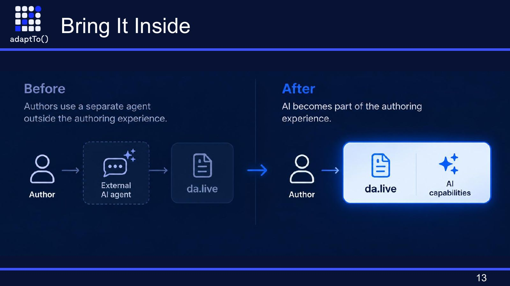
- What it is
- How Experience Workspace and da.live came to be, what they can do, and how AI works on top of da.live, with a demo. From the talk's slides: authors used to work with a separate agent outside the authoring experience. Now AI is part of it.
- Why watch
- The demo is great. I kind of wish this talk had gone before ours, since our talk was built on Experience Workspace too.
- My take
- da.live, with its HTML data structure, is very AI friendly. I'm sure Experience Workspace does amazing things with it. Highly recommend it.
15Measuring the Unmeasurable: Pre/Post Experimentation for Brand Visibility in LLMs

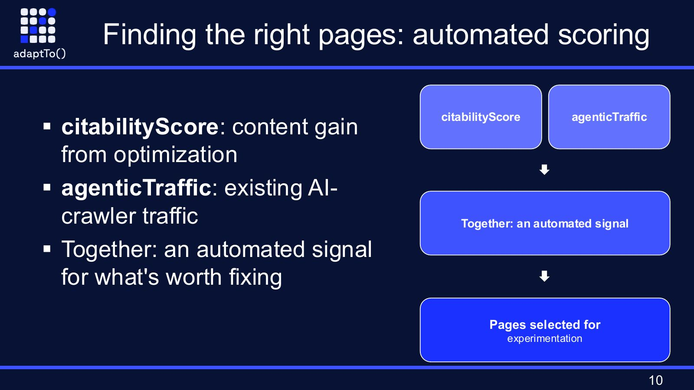
- What it is
- Before-and-after experiments that measure how visible a brand is in large language models (LLMs), the models behind AI chat answers. From the talk's slides: two scores, citabilityScore (content gain from optimization) and agenticTraffic (existing AI-crawler traffic), combine into one automated signal for which pages are worth fixing.
- Why watch
- If you care about LLM visibility. All of us do.
- My take
- This is an area I still need to brush up on, so I was drinking from a fire hose. A very cool presentation.
16Building an Efficient Content Supply Chain for the AI Era

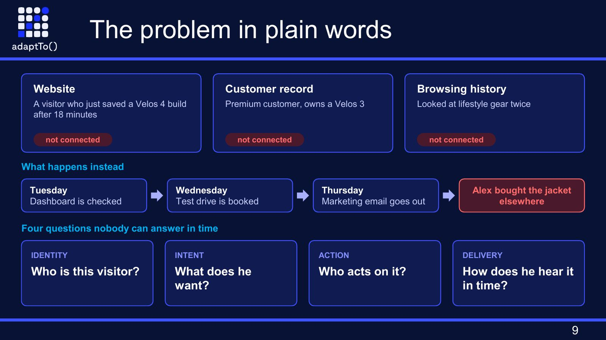
- What it is
- Content supply chain and AEM Assets in the age of AI, and how we should think about it. It was one of the few talks at the conference on this topic. From the talk's slides: a visitor's website session, customer record and browsing history aren't connected, so the marketing email goes out on Thursday, after he already bought the jacket elsewhere.
- Why watch
- It has a realistic demo of a content supply chain in the modern world.
- My take
- I really enjoyed it, especially how it focuses more on AEM and less on Workfront. The demo is quite cool too.
17Shifting the Search Paradigm

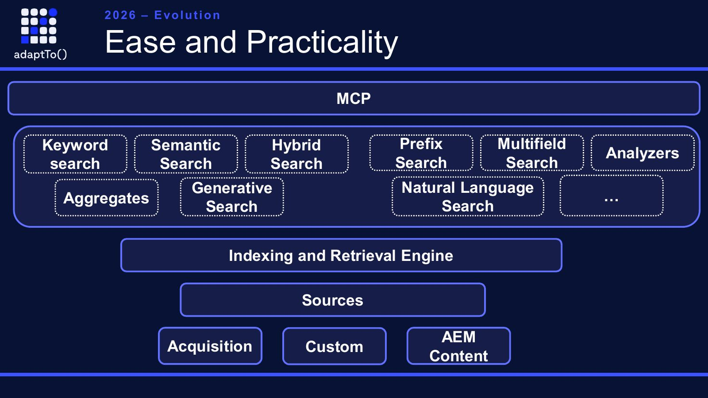
- What it is
- Adobe investing in search for AEM. From the talk's slides: it started in 2025 as the Content AI MVP, with keyword, semantic, hybrid and generative search, and added MCP and natural language search in 2026.
- Why watch
- On AEM projects, I've usually recommended other search engines. With this, AEM projects could use Adobe's own search.
- My take
- I've always thought this was super exciting. It makes a ton of sense. Maybe Experience League can move over too, since I think it runs on a non-Adobe search engine today.
18From Cache Invalidation to Continuous Materialization

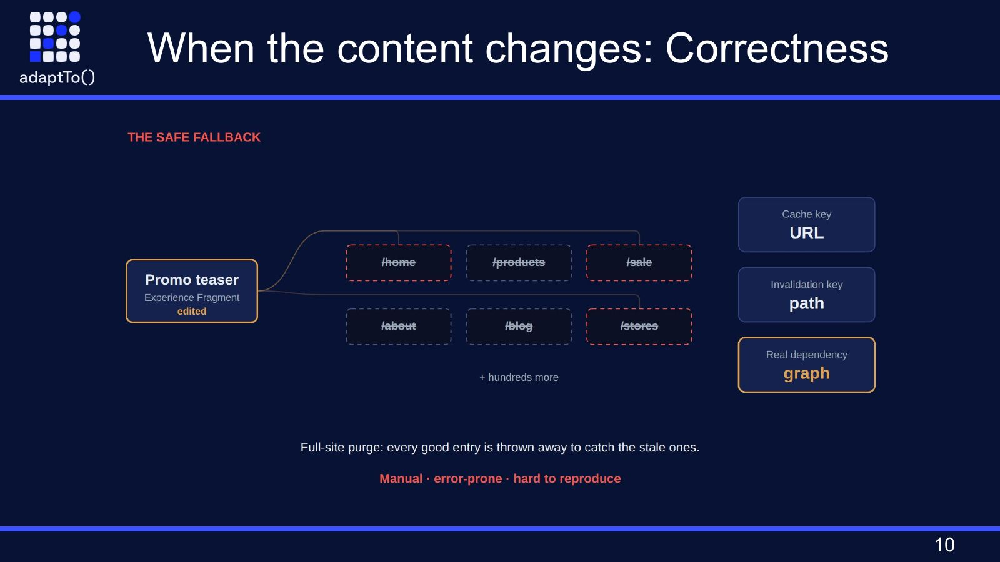
- What it is
- The last talk on Tuesday. It goes deep on one niche problem, cache invalidation, shows its core challenges, and moves to continuous materialization. From the talk's slides: the cache key is the URL and the invalidation key is the path, but the real dependency is a graph. So the safe fallback is a full-site purge.
- Why watch
- If you're looking into caching and want a really good caching solution.
- My take
- I always enjoy talks like this. This work needs a lot of rigor, and most architects and teams don't have the time or the patience to do it. Really cool to see it done.
Day 3: Wednesday, September 30
19Reimagining AEM Forms Rule Authoring with Coding Agents

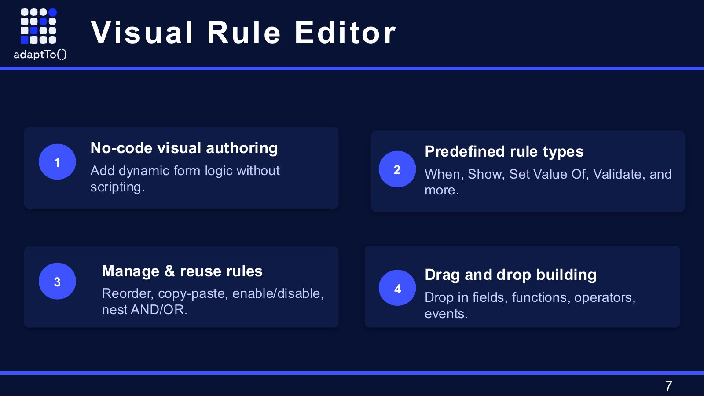
- What it is
- The first talk of the third and final day: coding agents, skills and an MCP connection that help you write AEM Forms rules.
- Why watch
- If you use AEM Forms.
- My take
- AEM Forms is very powerful. Configuring forms by hand takes quite a bit of expertise, and the rule editor is so powerful that it can be hard to configure. An MCP connection on top of all that is very, very cool.
20Tracking Through the Transition: A Flexible Tracking Architecture for AEM Migrations

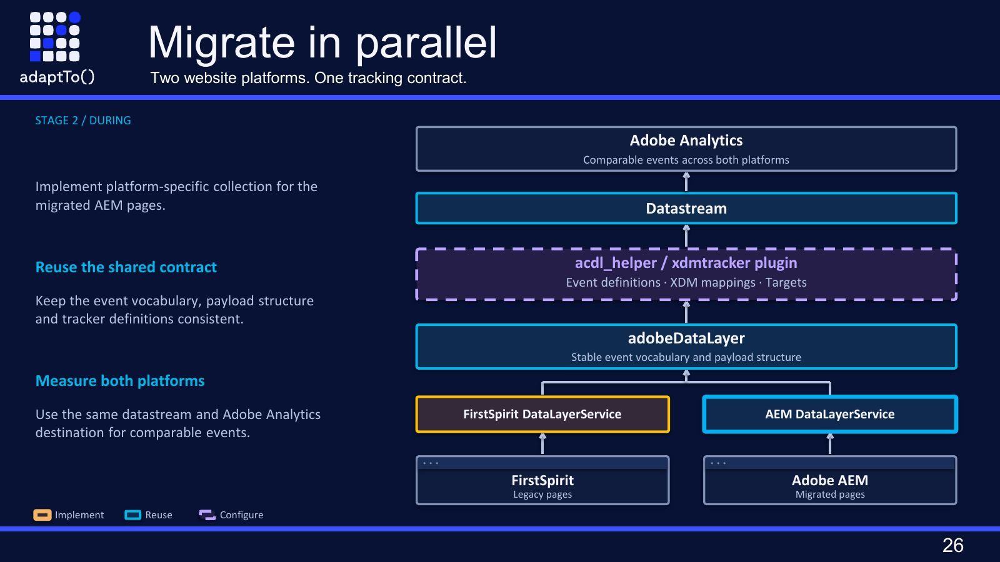
- What it is
- The data layer and analytics through an AEM migration, and the team's migration process. From the talk's slides: two website platforms, one tracking contract.
- Why watch
- The data layer, and how data actually gets to Adobe Experience Platform (AEP), Customer Journey Analytics (CJA) or even Adobe Analytics, is constantly underestimated or misunderstood.
- My take
- A data layer is always good. On Edge Delivery Services we're still choosing the Adobe Client Data Layer, so all of this still applies. The talk also has one of the better diagrams, the one shown here. I may even have reused it in a proposal. I always like good technical diagrams. Great job by the team.
21Stop Messing with Index Definitions: Index Optimizer and Simplified Index Management in AEM

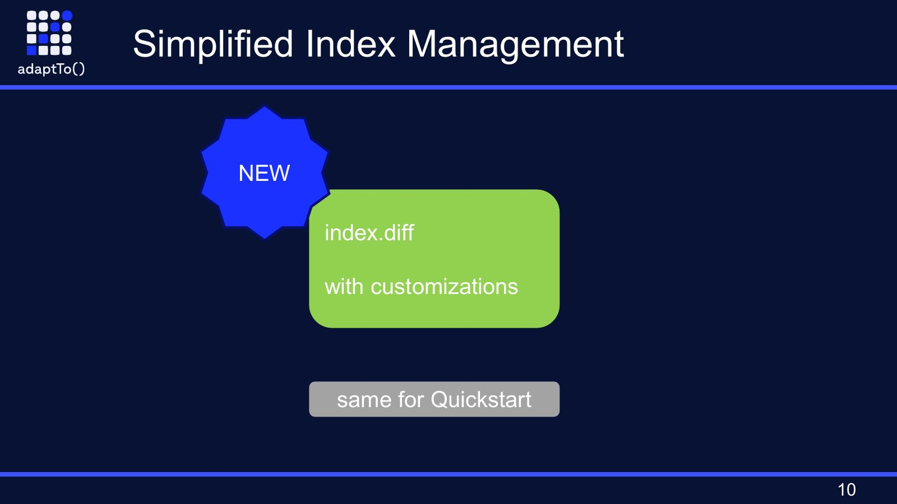
- What it is
- Adobe's engineering investment in AEM indexing: an Index Optimizer and simplified index management. From the talk's slides: customizing an index used to mean copying and renaming definitions like damAsset-12-custom-1. Now a customization is a diff: 10 lines of JSON instead of 400 lines of XML.
- Why watch
- A must-watch if you deal with indexing.
- My take
- Indexing has always been a fun thing. I personally stopped worrying about it much once the aggregate index got really good. Still, this is a really thoughtful piece of engineering. For those of us who've been in AEM for 15 years, it's evolutionarily ahead of where indexing has been. Super cool.
22Project Asset Hub - Modernizing AEM Asset Share with Edge Delivery Services, Content Hub, and Edge Compute

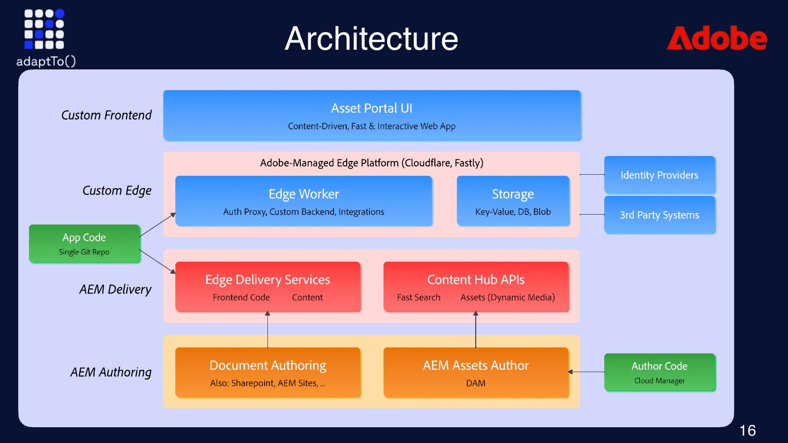
- What it is
- Asset Hub: an asset portal coded on Edge Delivery Services that works with Content Hub, running on an Adobe-managed edge.
- Why watch
- It's a really good use of Edge Delivery Services plus AEM Assets. It also sounds proven, with a ton of users. The talk's slides say one pilot customer has been live since March 2026, with two more in progress and 8,000+ users.
- My take
- This one was extremely exciting for me. I love Adobe's products. I love Content Hub. But the licensing and IMS, Adobe's identity system, are a bit of a pain, because you have to onboard people into IMS. Now there's an Asset Hub coded on Edge Delivery Services, which is amazing. Why haven't I thought of this? I wish I had, sooner.
23Editorial AI in AEM: Giving Editors Control Over LLM-Generated Image Descriptions

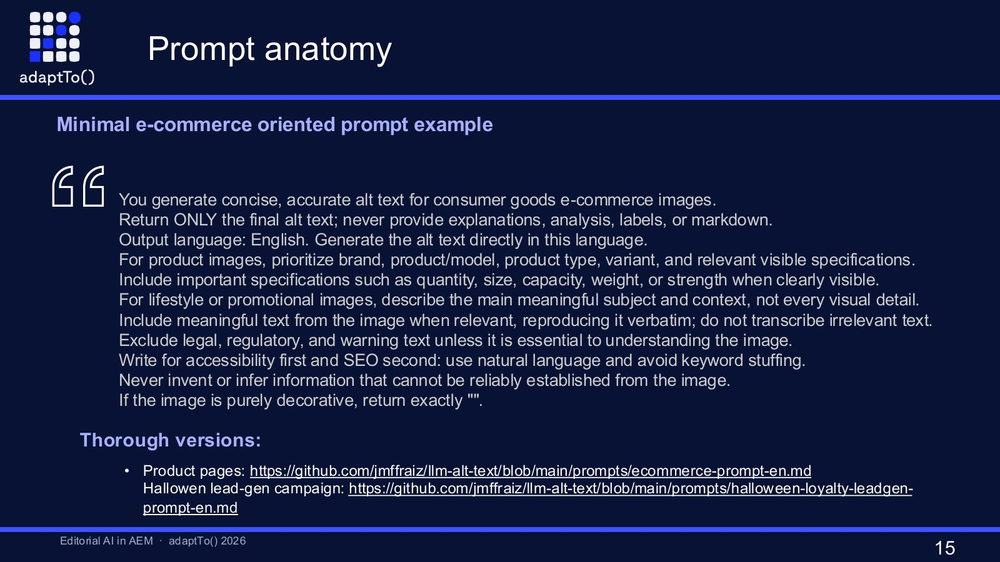
- What it is
- AI prompts that generate image descriptions for assets in AEM, with editors in control. From the talk's slides: they needed a prompt per purpose and per brand, market and language, with marketers managing their own prompts, with real governance, in a UI they already know.
- Why watch
- If you want a more automated, AEM-native process that generates this for you.
- My take
- What's unique is that it uses more of the classic Java integrations, and it keeps the instructions for the AI inside AEM, so authors can configure them. I thought that was really interesting. A very cool implementation.
2415 Years of Women at adaptTo() - The Facts and the Untold Stories Behind the Numbers

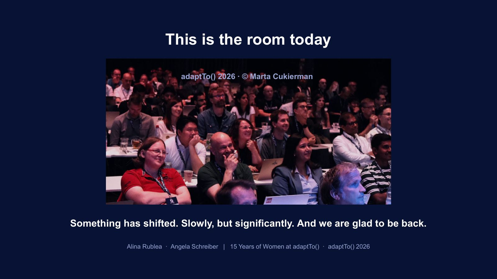
- What it is
- The facts and the stories behind women at adaptTo() over 15 years. Fifteen years ago there were maybe one or zero women in the room. Over time, more and more came to the conference.
- Why watch
- A very cool narrative.
- My take
- Super agree. Diversity is super important, and I'm happy it's more diverse now. In the photo of the room today I can see myself, and my speaking partner Katie from Best Buy. It looks like Lisa Brown, who gave the next talk, had stepped out, but she sat there too. Very cool to see more women in the room.
25Make Your Own DAM Breakfast with Adobe Experience Manager

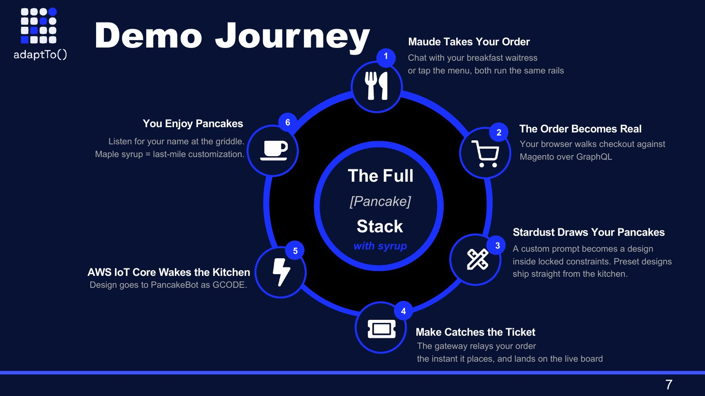
- What it is
- The last full talk, from my Accenture peer Lisa Brown. She tied AEM to Adobe Commerce, many other integrations and robotics: an AI chatbot takes your order, then pancakes get made on stage. From the talk's slides: the order checks out against Magento over GraphQL, a custom prompt becomes a pancake design inside locked constraints, and AWS IoT Core sends the design to a PancakeBot as G-code.
- Why watch
- If you want to see something fairly cool and new: AEM, Commerce, pancake making, robotics and AI all working together.
- My take
- An extremely ambitious project. Extremely cool talk.
Thanks to the speakers and the organizers
If you made it this far, thank you. And thank you to all the speakers, and to diva-e Conclusion for organizing adaptTo().
The official talk videos should be on the adapt.to schedule in the next week or so. If you'd rather watch than read, the video at the top covers all 25 in under 15 minutes.